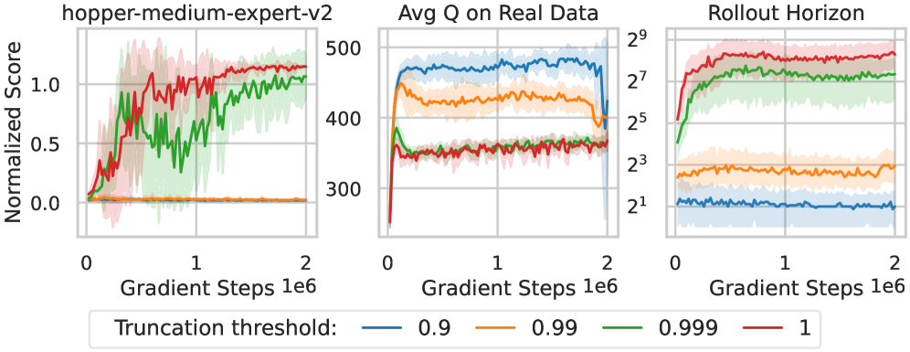

Long-horizon rollouts as overestimation control
Offline model-based RL usually fights value overestimation with conservatism: penalize out-of-dataset actions, and keep rollouts short. NEUBAY removes the conservatism and lets a long rollout do the work. The mechanism is concrete — a posterior over world models decides how far to roll out, and the discount factor demotes the one term that overestimates.
The setup: learning from a fixed dataset
In offline RL the agent gets one batch of logged transitions and cannot collect more. A model-based agent learns a world model from that batch — a transition-and-reward function that maps a state and action to the next state and reward — and then trains a policy inside the model instead of in the real environment.
This is where value overestimation appears. The policy improves by preferring actions the model scores highly, but the model was fit on a finite dataset, so on actions the data never covered it extrapolates, and it tends to extrapolate upward. The optimizer then selects exactly those actions whose high score is an artifact of the model. The standard defense is conservatism: add a pessimism penalty on out-of-dataset actions, and keep the imagined rollout short so it does not wander into unsupported regions where error compounds.
How far to roll out
NEUBAY targets the rollout length directly. The value of a candidate action is estimated from an imagined rollout of horizon \(H\): a sum of model-predicted rewards along the way, plus one bootstrapped value estimate at the end to cover the rest.
The two terms behave differently. The imagined rewards are low-bias when the model generalizes. The bootstrapped terminal value is the term most prone to overestimation — it is the value function reporting a number for a state the rollout has arrived at. And that term is multiplied by \(\gamma^{H}\). With a discount near \(0.99\), a one-step rollout keeps almost all of it; a several-hundred-step rollout drives it to nearly zero.
Why longer rollouts lower the bias
The paper frames this as a bias–variance trade-off on the value target. Bootstrapping from a learned value function injects the overestimation bias in a single term; relying instead on many imagined reward steps trades that bias for the model's own generalization error, which stays low when the model is accurate. Because the bootstrapped term is exponentially discounted with \(H\), extending the horizon reduces the agent's sensitivity to value-function error. Removing conservatism does not make overestimation worse here — once it is removed, the long rollout is what keeps the value target honest.
What lets it go long: a posterior over world models
A long rollout through a single learned model accumulates its errors, which is the usual reason offline methods keep rollouts short. NEUBAY avoids the single-model trap with a Bayesian treatment: instead of one world model it keeps a posterior over world models, approximated by an ensemble, and trains a history-dependent agent to maximize return averaged over that posterior. The name comes from this neutral Bayesian principle — neutral because it drops the explicit pessimism penalty, Bayesian because it represents what it does not know as a distribution over models rather than a single point estimate.
The ensemble also supplies the stopping rule. Where the data is dense the ensemble members agree, so epistemic uncertainty is low; where the data thins out they disagree. NEUBAY rolls out until that disagreement crosses an uncertainty threshold \(\zeta\), then truncates. The horizon is therefore adaptive and state-dependent: it is long in well-supported regions and short where the model stops being trustworthy.
Evidence: 33 datasets and one decisive ablation
NEUBAY is evaluated on 33 datasets across four offline suites — D4RL locomotion (12), and the NeoRL locomotion (9), Adroit (6), and AntMaze (6) benchmarks — against 15 baselines spanning conservative model-free methods (CQL, IQL, EDAC, ReBRAC), conservative model-based methods (MOPO, COMBO, RAMBO, MOBILE, and others), and Bayesian-inspired methods (APE-V, MAPLE, CBOP, MoDAP). Without an explicit conservatism penalty it stays competitive on standard data and is strongest on low-quality datasets, where conservative methods tend to fail.
The ablation that carries the central claim is on the uncertainty threshold \(\zeta\), because \(\zeta\) sets how far the rollout runs. Tightening it shortens the horizon and the failure mode that appears is severe value overestimation; loosening it produces horizons in the tens-to-hundreds of steps and recovers performance. The paper notes these horizons run counter to the conventional preference for short rollouts.

The default ensemble size is large — \(N = 100\) world models, with layer normalization inside each — and the paper reports that reducing it to 20 or 5 degrades performance. The posterior is maintained over the joint reward–transition model, not over the value function; the value function is the agent's own estimate trained on top.
Limitations
The threshold \(\zeta\) is a hyperparameter, so "how far to trust the model" is set rather than learned end-to-end. The \(N = 100\) ensemble is computationally heavy, and the argument leans on the ensemble's spread being a faithful stand-in for epistemic uncertainty, which is not guaranteed in high-dimensional learned models. The result also sits in tension with the online latent-MPC line, where TD-MPC deliberately keeps the rollout short and invests in an accurate terminal value instead — the same overestimation problem, addressed from the opposite end of the horizon.
References
- NEUBAY: Long-Horizon Model-Based Offline Reinforcement Learning Without Explicit Conservatism (arXiv:2512.04341). Code: github.com/twni2016/neubay.
- Contrast on the short-horizon end: Temporal Difference Learning for Model Predictive Control (TD-MPC).